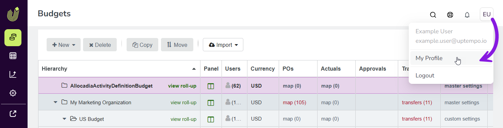

Change or reset your Uptempo password
If you use an email address and password to sign in to Uptempo, you can change your password at any time (for example, if your organization requires periodic password rotation).
If you have forgotten your password, you can also easily reset it at any time.
Change your Uptempo password
Follow these instructions if you are able to sign in to your Uptempo account and want to change your current password.
While you are signed in to Uptempo, click the User Menu (the button with your initials) in the page header on any page.
In the User Menu, click My Profile:

On the Edit Profile page, use the fields in the Reset Password section to change your password. You'll need to enter your current password, as well as the new password you want to use twice.
Click Reset Password to finalize the password change.
{kind=link}
Your password change takes effect immediately. Use the new password you set the next time you sign in to Uptempo.
Reset your Uptempo password
Follow these instructions if you can't remember your Uptempo password.
Go to your Uptempo login page, for example secure.uptempo.io, eu1.uptempo .io, etc.
Click Reset Password.
Enter the email address you use to sign in to Uptempo into the Email field. Click Reset Password.
Check your emails for the password reset email. Allow a few minutes for the email to arrive, and be sure to check your junk mail folder.
Follow the instructions in the password reset email to set a new password for your Uptempo account.
After resetting your password, you can immediately sign in to Uptempo with the new password you set.